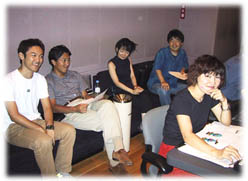
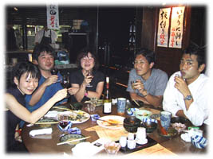

|
〜「ソニックアドベンチャー２」〜
アフレコオーディションの巻 |
|
| ２０００年８月１日 |

０８／０１（火）
 ソニックＡＤＶ２もそろそろこんな時期に来ています、でも発売はまだ先になりそうです。久しぶりに音響監督の木村さんと営業の稲毛さんとお会いして前回のソニックＡＤＶから２年も経ったんだなーと思いました。お二人ともお元気そうで何よりでした。このあと久しぶりにお会いしたので赤坂で宴会をしつつ帰路につきました。そうそう、このお二人は映画の声を日本語にする仕事が本業で、最近ですと『アイアンジャイアント』の仕事をされたそうです。  映画公開時にも気になっていたけど見れなかった『アイアンジャイアント』が最近ＤＶＤで発売されたばかりだったので、「買いますねー」と話していて次の日会社に来てみると、『レンタヒーローＮｏ．１』プロデューサーの石本さんから、石本さんが『レンタヒーローＮｏ．１』の名古屋イベントで、ソニックチーム宛でファンからのプレゼントを頂きましたという物が社内メールで届いていました。中を空けてみると『アイアンジャイアント』のＤＶＤが入っていました。封筒には「ビバ！ハリネズミ！」とだけ書かれていて、宛名とか何もなかったのでどなたか分かりませんがありがとうございました。m(__)mソニックチームでありがたく見させてもらいますね。しかし、なんと言う偶然と思ってしまいました。ちなみに僕個人でも必ず買いますよ。 |

|

|